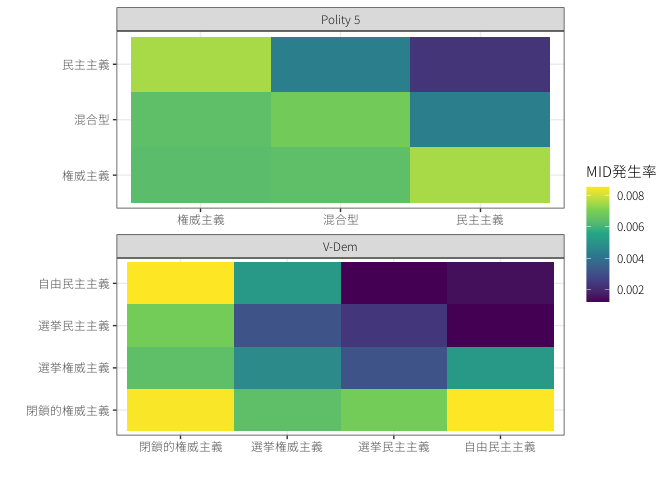
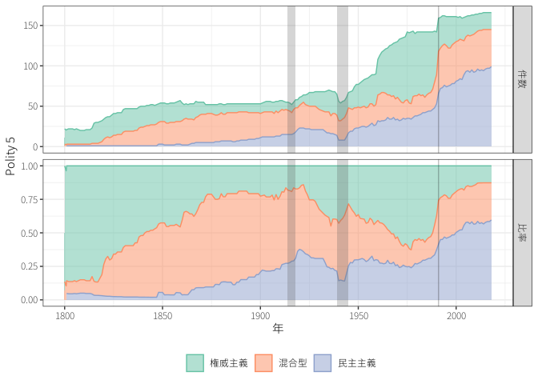
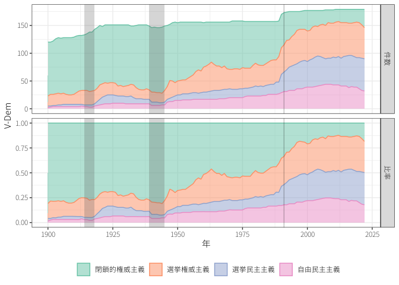
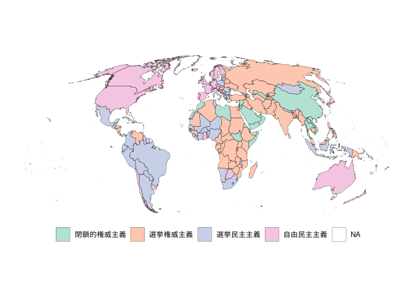
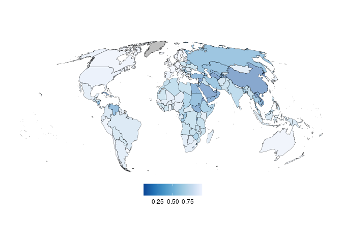
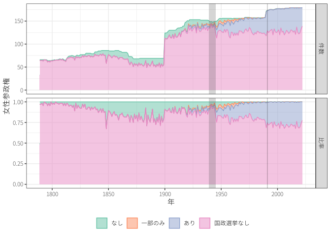
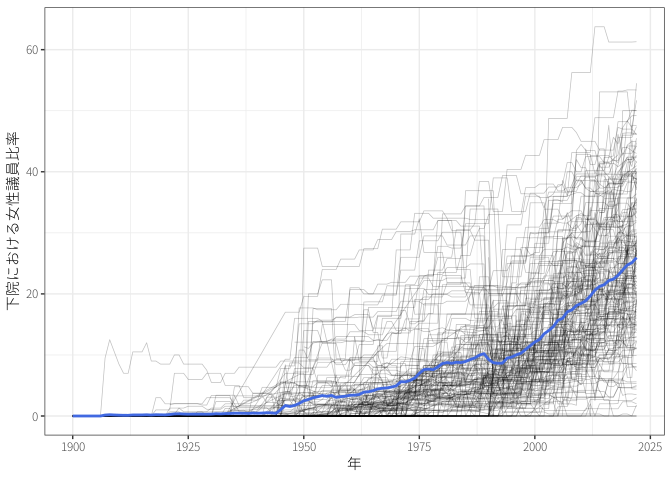
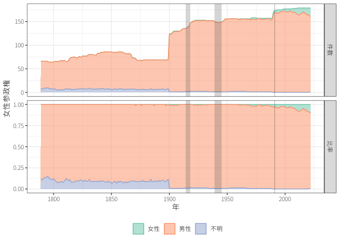
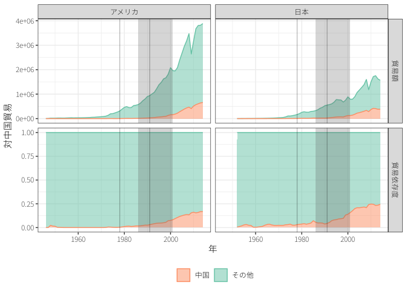

民主的平和と商業的平和
国際公共政策学
1 民主的平和
民主的平和 (democratic peace: DP) ：「民主主義国同士は戦争をしない」という経験則
- 1900年以降の二国間の政治体制の組み合わせとMID発生件数の関係
- 民主主義に関するデータセットについては 久保, 末近, と 高橋 (2016) や 粕谷 (2014) を参考
- Polity 5やV-Dem
\(\leadsto\)民主主義の測り方によって細部は異なるが、次のことが言える(Gleditsch と Hegre 1997)。
- 民主主義国同士\(\leadsto\)軍事衝突ほぼなし
- 民主主義国は権威主義国\(\leadsto\)軍事衝突あり
\(\leadsto\)国内政治や政治体制も考慮しなければ戦争と平和については分からない。
- これまでは国家をみんな同じ個人、一枚岩のアクターとして扱ってきた。
1.1 政治体制
政治体制の定義については様々
\(\leadsto\)民主主義と権威主義 (autocracy/authoritarian) という二分法ではない。
- 競争的権威主義、選挙権威主義：形式的には選挙を行っているが実質的には独裁(Gandhi と Lust-Okar 2009)1
- 独裁のあり方にも様々（個人独裁、軍事政権、集団指導など）
1 東島雅晶「恐怖支配から恩寵政治へ？ 権威主義体制の変貌する統治手法」(2022) 中央公論；浅古泰史・東島雅昌「「民主主義 vs. 権威主義」のゆくえ」(2022) 経済セミナー10・11月号
長期的に見ると民主化かが進んでいる。
- 近年は民主主義の後退 (democracy backsliding) の懸念も主張されている。


政治体制は地域ごとに偏りがある。

1.2 民主的平和の論理
民主主義同士では戦争をしないという謎を説明する論理が様々に提案されている。
2 安中進「独裁者はなぜ向こう見ずな戦争を起こすのか？――計量分析から考察する戦争」(2023) 中央公論
1.2.1 アカウンタビリティ
政治体制＝国内政治のルール\(\leadsto\)政策に影響
- 全ての国が同じように国力や富を追求するわけではない。
- 実際の政策決定過程は複雑な委任 (delegation) 関係、本人＝代理人モデル (principal-agent model)
- 有権者→政治家→官僚など

政治家は選択民 (selectorate) によって選出・排除される＝アカウンタビリティ (accountability)
- アカウンタビリティ：結果に責任を負って、非難を受ける（究極的には役職からの追放）可能性があること3
- 選択民：政治的な指導者を（集団で）決定する権利を持つ人々
3 日本語では「説明責任」と呼ばれるが、説明をする（それだけでよい）責任ではない。
\(\leadsto\)政治的指導者は勝利連合 (winning coalition) を形成・維持することで政治的生き残り (political survival) を図る(浅古 2018, 第9章; Bueno de Mesquita ほか 2013)。
- 主権国家体系では政治的指導者は国際社会や他国に対してアカウンタビリティを持っていない。
勝利連合の大きさは政治体制によって変わる。
- 民主主義国：選択民は有権者全体であり、勝利連合は政権の獲得に必要な有権者の数
- 大統領制：勝利連合は選択民の約半分
- 議院内閣制で小選挙区制：選択民の1/4でも可能
- 権威主義国：選択民は一部のエリートや軍人であることが多く、勝利連合はそのうちの一部

政治家は有限の政策資源を配分して勝利連合を形成・維持
\(\leadsto\)選択民と勝利連合の大きさ\(\leadsto\)政策の違い4
4 民主主義国の政治家が善人で、権威主義国の政治家が悪人であるとは限らない。
- 権威主義国：必要な勝利連合の規模が小さい\(\leadsto\)賄賂や利益誘導などの一部の個人に与えられる私的財 (private goods)
- 民主主義国：必要な勝利連合の規模が大きい\(\leadsto\)経済成長や安全保障などの広く行き渡る公共財 (public goods)
- 民主主義と権威主義のパフォーマンスに関しては次の論考5を参照
5 東島雅晶「民主主義と権威主義、どちらの「社会経済パフォーマンス」が上なのか？ データ分析が示す驚きの結果」(2022) 現代ビジネス；安中進「民主主義は権威主義に劣るのか? : コロナ禍における政治体制の実証分析」(2021) 中央公論；安中進「政治体制は豊かさや健康にどのような影響を及ぼすのか？」(2022) 経済セミナー10・11月号
戦争において被害を受けるのは国民全体である／戦争を決定するのは一部の政治家
\(\leadsto\)民主主義国では多くの国民にアカウンタビリティを負っており、戦争では政治的に生き残りにくい。
- 民主主義国が権威主義国とは戦うことは説明できない。
- 民主主義国の場合は選挙に負けるだけ／権威主義国の場合は革命やクーデタなどで政権の座を奪われ、処罰を受けることが多い(Goemans 2008)
権威主義国は民主主義国の決意が低いと見積もって、強硬な姿勢になりやすい？
- 権威主義国から攻撃することが多い(Reiter と Stam 2003)
1.2.2 透明性
民主的平和の異なる説明として、情報の非対称性に着目するものがある。
- 民主主義国では報道の自由(Van Belle 1997)や与野党の議論(Schultz 1998)を通じて政治過程が比較的公開\(\leadsto\)情報の非対称（誤認される可能性）が減る

- 観衆費用 (audience cost) \(\leadsto\)民主主義国の公開された威嚇には信憑性が高い(Fearon 1994)。
- 観衆費用：言行不一致によって被る政治的コスト（例、国民からの支持の下落、選挙での敗北）

- （国内）観衆費用が存在するという研究(M. Tomz 2007; Kurizaki と Whang 2015)
- 存在しない（大きな役割を果たしていない）という研究Katagiri と Min (2019)
- 権威主義国にも観衆費用は存在するという指摘(Weiss 2013; Weeks 2008)
- 民主主義国の威嚇の信憑性は高くないという指摘(Downes と Sechser 2012)
透明性と民主的平和の関係に懐疑的な見方(Finel と Lord 1999)
- 民主主義の情報の政策生と権威主義国から攻撃することは整合的？
1.2.3 規範・アイデンティティ
民主主義国では対立を互いに平和的に解決するという規範が成立しており、それが国際関係にも波及？(Doyle 1986; Risse-Kappen 1995)
- 民主主義国は一般的に平和的ではない。
- 民主主義国同士では互いに信頼しているので、暴力を用いない？
- 民主主義国同士：妥協により平和的に解決することが多い(Mousseau 1998; Dixon 1994)
- 民主主義国の市民：民主主義を脅威とは捉えにくく、民主主義国同士の戦争に賛成しにくい(M. R. Tomz と Weeks 2013)
- 歴史的に見て民主主義国は権威主義国を必ず嫌うわけではない（例、冷戦期）
1.2.4 女性政治家
年々、女性参政権や女性議員の比率、女性の政治的指導は増加



一般的に女性は男性に比べて武力行使に否定的で、平和的解決を望むと言われている
\(\leadsto\)女性の政治進出は平和をもたらす？
- ジェンダーの平等や女性議員の増加、女性参政権の拡大\(\leadsto\)民主主義国において武力行使や軍事費の減少(Reiter 2015; Barnhart ほか 2020)
- 平和的な社会で女性の政治進出が進んでいる？
- 女性の政治的指導者\(\leadsto\)対立的な行動を取りやすい(Koch と Fulton 2011; Caprioli と Boyer 2001)
- 政治的指導者になるような女性は男性的である（ことが求められる）(Schramm と Stark 2020)
- 女性の政治的指導者は他国から強硬な姿勢を取られやすい(Schwartz と Blair 2020)
1.3 民主主義と民意
一般論として、民主主義のほうが権威主義に比べて広く市民の利益になる政策をしている。
\(\leadsto\)必ずしも民主主義（特に選挙）が民意を表しているとは言えない。
政策の好みと政党の好みは一致しないかもしれない。
政策の好みと政党の好み
5人の有権者がいて、A党とB党の3つの政策について、次のように好んでいる。
| 有権者 | 金融 | 外交 | 原発 | 支持政党 |
|---|---|---|---|---|
| 1 | A | A | B | A |
| 2 | A | B | A | A |
| 3 | B | A | A | A |
| 4 | B | B | B | B |
| 5 | B | B | B | B |
| 多数決の結果 | B | B | B | A |
選び方によって結果は変わるかもしれない。
選び方と政策
9人の有権者がいて、4人の候補者（政策）について、次のように好んでいる。
| 人数 | 4人 | 3人 | 2人 |
|---|---|---|---|
| 1位 | A | C | D |
| 2位 | B | B | B |
| 3位 | C | A | C |
| 4位 | D | D | A |
- 多数決
- Aが最多の4人の支持を得る
- 決選投票
- 1回目で2票しか得なかったDが落選
- 決選投票ではCが5人の支持を得る6
- ボルダルール：1位に4点、2位に3点、3位に2点、4位に1点を与える
- Aは24点、Bは27点、Cは24点、Dは15点
6 多数決の場合は票割れが起こってしまっている。
\(\leadsto\)制度＝ルールによって政策結果は変わりうる。
- 選挙（多数決）の結果が民意を反映しているとは言えない。
1.4 民主主義の副作用
1.4.1 旗下結集効果
旗下結集効果 (rally [’round the flag] effect)：戦争などの国家的危機において政府に対する支持率が急上昇する現象(Mueller 1970)

{kind=link}
- 外敵の存在\(\leadsto\)集団の結束力が高まる。
- 野党が政府批判を控える。
- ニュースが戦争に独占\(\leadsto\)政府に不都合な情報が流れにくい。
- 政府は国内問題を他国に転嫁する。
\(\leadsto\)情報を公開すれば誤認は減るが、世論に影響されやすくなる。
1.4.2 陽動戦争
政治家は陽動戦争 (diversionary war) を起こす誘因を持つ。
- 政権基盤が不安定な政治家は旗下結集効果によって政治的生き残りが可能？
- 復活のためのギャンブル (gambling for resurrection) に賭ける？
陽動戦争理論が正しい\(\leadsto\)経済状況が悪い場合に戦争を起こしやすい？
- 権威主義国はインフレ率が上がると敵対国と戦いやすい(Mitchell と Prins 2004)
- 民主主義国では右派の政権はインフレ率や失業率が上昇すると紛争を起こしやすい(Arena と Palmer 2009; Fordham 1998)
陽動戦争理論が正しい\(\leadsto\)政治的に不安定な場合に戦争を起こしやすい？
- 政治的生き残りが難しい場合には戦争を起こしにくく、国際危機の可能性は生き残りを困難にする(Chiozza と Goemans 2003)
- 民主主義国における政治的生き残りにとって重要な選挙の前ではなく、選挙後に戦争は起こりやすい(Gaubatz 1991)
旗下結集効果を見込んだ陽動戦争（例、フォークランド紛争）はしばしば観察される／戦争の大部分を説明するわけではない。
- 戦争のコストを埋め合わせるほど大きな旗下結集効果は珍しい？
- 戦争には政治家にとっても大きなコストとなりうる(Goemans 2000)
- 選挙権威主義国で妥協あるいは敗北をすると政治的指導者は処罰されやすい
- 大きなコストではないという見方も(Chiozza と Goemans 2004)
1.4.3 利益誘導
政策決定は、官僚（特に安全保障では軍部）や利益団体 (interest group) も影響する。
- 官僚や軍人：国益だけでなく予算の拡大や昇進といった自己目的も追求
- 軍部の影響力の高い国は武力紛争を起こしやすい(Sechser 2004; Weeks 2012)
- アメリカでは軍部が文民（背広組）よりも武力行使に慎重になりやすい。
- ロビー団体や大企業（軍産複合体など）が攻撃的な政策を取るように圧力をかける？
- 平和的な関係を求める企業によるロビー活動も起こる\(\leadsto\)必ずしも利益団体の存在が戦争を引き起こすとは言えない(Brooks 2013)
- 戦争から利益を得るものがいるため、そうしたアクターの圧力の結果であるという陰謀論に陥りやすい。
\(\leadsto\)陽動戦争にせよ利益誘導にせよ、戦争のコストよりも大きな利益を政治家に提供できるのか？
1.5 民主化による平和？
民主主義国同士では戦争が起こらないという相関\(\neq\)民主主義国同士になれば平和が促進されるという因果
- 自由市場経済の国は民主主義になりやすく、平和的関係を維持しやすい？(Gartzke 2007)
- 友好国に囲まれている国や領土問題を解決した国が民主化している？(Thompson 1996; Gibler と Tir 2010, 2014)^
- 民主主義国はWW2においてはドイツ、冷戦においてはソビエト連邦という共通の脅威に直面していたので、友好関係を維持していた？(Farber と Gowa 1997; McDonald 2015)
仮に民主主義国同士と平和の間に因果関係\(\neq\)民主化が平和を促進
- 新興民主主義国や民主化の過程にある国は戦争を起こしやすい(Mansfield と Snyder 1995)
- 国民が敵対的な感情を抱いている国が民主化\(\leadsto\)世論に影響されて攻撃的な政策？
2 商業的平和
貿易のように国境を越えた経済活動の規模は年々拡大
- 経済的相互依存 (economic interdependence)：国家が他国に経済的に依存し合っている状態
2.1 商業的平和の論理
商業的平和論 (commercial peace theory)：経済的相互依存の規模が拡大\(\leadsto\)国家間での戦争は起こりにくい
- 戦争によって経済的相互依存が低下\(\leadsto\)経済的利益の減少＝戦争の費用の拡大
- 機会費用 (opportunity cost)：「本来、（戦争がなければ）得ることのできた利益」
- 経済的相互依存が深まっている国同士での威嚇\(\leadsto\)信憑性が高い
一般的には商業的平和論は支持(Hegre, Oneal, と Russett 2010)
- 世界恐慌＆経済ブロック化\(\leadsto\)WW2
- 戦後の先進民主主義国間（独仏や日米）の平和
なかなか経済的相互依存\(\leadsto\)平和を実証するのは難しい。
- 平和が経済的相互依存を深化させている可能性？
- 民主主義国が平和と経済的相互依存を作り出している可能性？
- WW1前のヨーロッパ諸国、WW2前の日米も経済的な結びつきは強かった。
2.2 パワーとしての相互依存
経済的相互依存は共通の利益を生む＆他国に依存するという点でパワー(Waltz 2010; Keohane と Nye 2012)
- 貿易の制限などにより経済的相互依存を低下させると威嚇\(\leadsto\)政治的な譲歩を引き出す
- （日本における表現では）経済安全保障の観点から政治と経済が融合
- 敵対国との経済的相互依存を制限（デカップリング／デリスキング）
- 同士国の間でサプライチェーンの強靭化

安全保障外部性 (security externalities)：経済的相互依存から得られる利益は軍事力にも転換できる性質(Gowa と Mansfield 1993)
- 経済的相互依存の拡大\(\leadsto\)経済成長\(\leadsto\)軍事力も拡大\(\leadsto\)パワーシフト？
2.3 経済制裁
パワーとしての経済的相互依存\(\leadsto\)経済制裁 (economic sanction)
- 経済制裁によって大きな打撃を与えることができるという点を貿易の武器化 (weaponization of trade)
- 過度に経済的に相互依存しているので戦争をすることができないとして経済的相互確証破壊 (mutulal assured economic destruction)
経済的相互依存の深化\(\leadsto\)経済制裁の威力を高める＆経済制裁を行った側へのコストも高める\(\leadsto\)経済制裁が困難？
- 自らは経済的相互依存から利益を得ていないが、相手は大きな利益を得ているときに効果
- どのよう財を貿易しているのか、代替的な経済パートナーの有無などが重要？
- グローバル化\(\leadsto\)経済的パートナーが増えると、ある国から経済制裁を受けても、他の国で代替が可能？
経済制裁による戦争の抑止効果
- 戦争の機会費用を高める
- 継戦能力を損ない、勝利確率を低下
- コストリーシグナルとして決意を伝達(Lektzian と Sprecher 2007)
経済制裁が抑止効果を持っていないように見える理由
- 一度、経済制裁を行うと、経済的相互依存の程度が下がってしまい、戦争の機会費用が低下
- 日本はアメリカからの石油禁輸で対米開戦を決意
- 経済制裁を受けて戦争をやめる国はそもそも戦争を起こさない？
- 武力紛争が起こるほど対立している国とは経済的相互依存がもともと低い？
\(\leadsto\)経済制裁と軍事制裁の決定的な違いは実力による軍隊の排除や占領が可能か否か
3 東アジアの平和？
WW2以降、東アジアは例外的に平和を享受してきた。
\(\leadsto\)今後も平和を維持できるか？
3.1 平和の動揺：パワーシフト
WW2直後、中華人民共和国は国際社会に参加できず、また国力も乏しかった。
- 改革開放以降の経済成長\(\leadsto\)軍事的台頭\(\leadsto\)秩序を変更する能力を持ち始める。
- アメリカは中国の台頭を防止するための予防戦争を行う動機？
大国と急速に成長する台頭国の間で対立\(\leadsto\)戦争に至ることは歴史的に繰り返されてきた。
- ドイツの台頭はWW1の一因と考えられる。
- アメリカの台頭、ソ連の挑戦、戦後のドイツ・日本の経済成長は戦争には繋がらず
3.2 平和の要因：同盟と経済
平和を維持するための要因のうち次のものは欠如
- 集団安全保障：アメリカと中国はP5なので安保理は機能できない。
- 地域的な安全保障機構：存在せず
- 民主的平和：権威主義国の中国や北朝鮮
\(\leadsto\)消去法的に今後の東アジアの平和を維持する要因は同盟と経済的相互依存？
- 同盟はアメリカの能力とコミットメント（特に核兵器による拡大抑止）次第
- 経済的相互依存は商業的平和と経済安全保障のジレンマ
3.3 いくつかのシナリオ
悲観的シナリオ：アメリカと中国の利害は衝突し、影響力拡大のために衝突
- 人権や民主主義、経済体制に関する価値観の違い
- 日本や韓国、台湾、フィリピンにおけるアメリカの軍事的プレゼンス、コミットメント\(\leadsto\)譲歩できず
- 中国は台湾問題で譲歩できず
\(\leadsto\)中国との経済交流を制限して成長を抑制＆軍事力を拡大して抑止する封じ込め (containment)
楽観的シナリオ：中国は既存の国際秩序から利益＆責任ある大国として行動
- 中国は自由な国際経済秩序によって経済成長を実現、貿易や投資パートナーはアメリカやその同盟国
- 安保理常任理事国として受け入れ、IMFや世銀でも投票権を拡大
- 経済成長は人権や民主主義の価値観を受け入れやすくする？
\(\leadsto\)中国を様々な国際制度に参加させ、現状の利益を拡大させる関与 (engagement) 政策
アメリカは軍事的な封じ込めと経済的関与\(\leadsto\)経済的にも封じ込め？
- 中国の経済活動の制限（特に知的財産）＆アメリカにおける雇用の喪失\(\leadsto\)トランプ政権が貿易戦争 (trade war)
- バイデン政権においても、抜本的な政策転換が起こっているとは言えない。
- 孤立主義的な共和党大統領が登場すると同盟コミットメントも疑わしくなる。
中国については分からないことが多いが、1つの要因は経済成長と人口成長の鈍化？
- 中国の台頭が緩やかになり、現状の維持に満足する軟着陸コース
- 将来の衰退を恐れて、有利な時点での予防的挑戦
参考文献
Arena, Philip, と Glenn Palmer. 2009. 「Politics or the economy? Domestic correlates of dispute involvement in developed democracies」. International Studies Quarterly 53 (4): 955–75.
Barnhart, Joslyn N, Robert F Trager, Elizabeth N Saunders, と Allan Dafoe. 2020. 「The suffragist peace」. International Organization 74 (4): 633–70.
Brooks, Stephen G. 2013. 「Economic Actors’ Lobbying Influence on the Prospects for War and Peace」. International Organization 67 (4): 863–88.
Bueno de Mesquita, Bruce, Alastair Smith, 四本健二, と 浅野宜之. 2013. 独裁者のためのハンドブック. 亜紀書房.
Caprioli, Mary, と Mark A Boyer. 2001. 「Gender, violence, and international crisis」. Journal of conflict resolution 45 (4): 503–18.
Chiozza, Giacomo, と Hein E Goemans. 2003. 「Peace through insecurity: Tenure and international conflict」. Journal of Conflict Resolution 47 (4): 443–67.
———. 2004. 「International conflict and the tenure of leaders: Is war still ex post inefficient?」 American Journal of Political Science 48 (3): 604–19.
Dixon, William J. 1994. 「Democracy and the peaceful settlement of international conflict」. American political science review 88 (1): 14–32.
Downes, Alexander B, と Todd S Sechser. 2012. 「The illusion of democratic credibility」. International Organization 66 (3): 457–89.
Doyle, Michael W. 1986. 「Liberalism and world politics」. American political science review 80 (4): 1151–69.
Farber, Henry S, と Joanne Gowa. 1997. 「Common interests or common polities? Reinterpreting the democratic peace」. The Journal of Politics 59 (2): 393–417.
Fearon, James D. 1994. 「Domestic political audiences and the escalation of international disputes」. American political science review 88 (3): 577–92.
Finel, Bernard I, と Kristin M Lord. 1999. 「The surprising logic of transparency」. International studies quarterly 43 (2): 315–39.
Fordham, Benjamin. 1998. 「Partisanship, macroeconomic policy, and US uses of force, 1949-1994」. Journal of Conflict Resolution 42 (4): 418–39.
Gandhi, Jennifer, と Ellen Lust-Okar. 2009. 「Elections under authoritarianism」. Annual review of political science 12: 403–22.
Gartzke, Erik. 2007. 「The capitalist peace」. American journal of political science 51 (1): 166–91.
Gaubatz, Kurt Taylor. 1991. 「Election cycles and war」. Journal of Conflict Resolution 35 (2): 212–44.
Gibler, Douglas M, と Jaroslav Tir. 2010. 「Settled borders and regime type: Democratic transitions as consequences of peaceful territorial transfers」. American Journal of Political Science 54 (4): 951–68.
———. 2014. 「Territorial peace and democratic clustering」. The Journal of Politics 76 (1): 27–40.
Gleditsch, Nils Petter, と Håvard Hegre. 1997. 「Peace and democracy: Three levels of analysis」. Journal of Conflict resolution 41 (2): 283–310.
Goemans, Hein E. 2000. 「Fighting for survival: The fate of leaders and the duration of war」. Journal of Conflict Resolution 44 (5): 555–79.
———. 2008. 「Which way out? The manner and consequences of losing office」. Journal of Conflict Resolution 52 (6): 771–94.
Gowa, Joanne, と Edward D Mansfield. 1993. 「Power politics and international trade」. American political science review 87 (2): 408–20.
Hegre, Håvard, John R Oneal, と Bruce Russett. 2010. 「Trade does promote peace: New simultaneous estimates of the reciprocal effects of trade and conflict」. Journal of Peace Research 47 (6): 763–74.
Katagiri, Azusa, と Eric Min. 2019. 「The credibility of public and private signals: A document-based approach」. American Political Science Review 113 (1): 156–72.
Keohane, Robert O., と Joseph S. Nye. 2012. パワーと相互依存. ミネルヴァ書房.
Koch, Michael T, と Sarah A Fulton. 2011. 「In the defense of women: Gender, office holding, and national security policy in established democracies」. The Journal of politics 73 (1): 1–16.
Kurizaki, Shuhei, と Taehee Whang. 2015. 「Detecting audience costs in international disputes」. International Organization 69 (4): 949–80.
Lektzian, David J, と Christopher M Sprecher. 2007. 「Sanctions, signals, and militarized conflict」. American Journal of Political Science 51 (2): 415–31.
Mansfield, Edward D, と Jack Snyder. 1995. 「Democratization and the Danger of War」. International security 20 (1): 5–38.
McDonald, Patrick J. 2015. 「Great powers, hierarchy, and endogenous regimes: Rethinking the domestic causes of peace」. International Organization 69 (3): 557–88.
Mitchell, Sara McLaughlin, と Brandon C Prins. 2004. 「Rivalry and diversionary uses of force」. Journal of Conflict Resolution 48 (6): 937–61.
Mousseau, Michael. 1998. 「Democracy and compromise in militarized interstate conflicts, 1816-1992」. Journal of Conflict Resolution 42 (2): 210–30.
Mueller, John E. 1970. 「Presidential popularity from Truman to Johnson」. American political science review 64 (1): 18–34.
Reiter, Dan. 2015. 「The positivist study of gender and international relations」. Journal of Conflict Resolution 59 (7): 1301–26.
Reiter, Dan, と Allan C Stam. 2003. 「Identifying the culprit: Democracy, dictatorship, and dispute initiation」. American Political Science Review 97 (2): 333–37.
Risse-Kappen, Thomas. 1995. 「Democratic Peace—Warlike Democracies? A Social Constructivist Interpretation of the Liberal Argument」. European Journal of International Relations 1 (4): 491–517.
Schramm, Madison, と Alexandra Stark. 2020. 「Peacemakers or iron ladies? A cross-national study of gender and international conflict」. Security Studies 29 (3): 515–48.
Schultz, Kenneth A. 1998. 「Domestic opposition and signaling in international crises」. American Political Science Review 92 (4): 829–44.
Schwartz, Joshua A, と Christopher W Blair. 2020. 「Do women make more credible threats? Gender stereotypes, audience costs, and crisis bargaining」. International Organization 74 (4): 872–95.
Sechser, Todd S. 2004. 「Are soldiers less war-prone than statesmen?」 Journal of conflict resolution 48 (5): 746–74.
Snyder, Jack, と Erica D Borghard. 2011. 「The cost of empty threats: A penny, not a pound」. American Political Science Review 105 (3): 437–56.
Thompson, William R. 1996. 「Democracy and peace: putting the cart before the horse?」 International organization 50 (1): 141–74.
Tomz, Michael. 2007. 「Domestic audience costs in international relations: An experimental approach」. International Organization 61 (4): 821–40.
Tomz, Michael R, と Jessica LP Weeks. 2013. 「Public opinion and the democratic peace」. American political science review 107 (4): 849–65.
Trachtenberg, Marc. 2012. 「Audience costs: An historical analysis」. Security Studies 21 (1): 3–42.
Van Belle, Douglas A. 1997. 「Press freedom and the democratic peace」. Journal of peace research 34 (4): 405–14.
Waltz, Kenneth Neal. 2010. 国際政治の理論. ポリティカル・サイエンス・クラシックス. 勁草書房.
Weeks, Jessica L. 2008. 「Autocratic audience costs: Regime type and signaling resolve」. International organization 62 (1): 35–64.
———. 2012. 「Strongmen and straw men: Authoritarian regimes and the initiation of international conflict」. American Political Science Review 106 (2): 326–47.
Weiss, Jessica Chen. 2013. 「Authoritarian signaling, mass audiences, and nationalist protest in China」. International Organization 67 (1): 1–35.
久保慶一, 末近浩太, と 高橋百合子(政治学). 2016. 比較政治学の考え方. 有斐閣.
坂井豊貴. 2015. 多数決を疑う : 社会的選択理論とは何か. 岩波新書. 岩波書店.
———. 2016. 「決め方」の経済学 : 「みんなの意見のまとめ方」を科学する. ダイヤモンド社.
山影進. 2012. 国際関係論講義. 東京大学出版会.
浅古泰史. 2018. ゲーム理論で考える政治学 : フォーマルモデル入門. 有斐閣.
粕谷祐子. 2014. 比較政治学. ミネルヴァ書房.